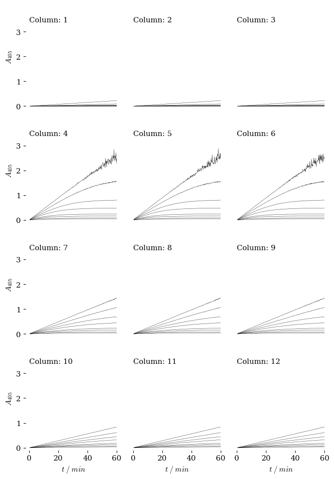

import pandas as pd
file_location = "data1/setup/"
plate_name = "Plate2_setup"
file_name = file_location + plate_name + ".csv"
df = pd.read_csv(file_name,
comment = "#",
skipinitialspace=True)
row_name_list = df["Row"].dropna()
S_conc_list = df["S_Conc"].dropna() * 1E-3 ### convert millimolar to molar
lane_name_list = df["Column"]
E_conc_list = df["E_Conc"] * 1E-9 ### convert nanomolar to molar
kcat_list = df["kcat"] * 60 ### convert /s to /min
Vmax_list = kcat_list * E_conc_list ## Vmax from kcat and [E]
KM_list = df["KM"] * 1E-3 ### conver mM to M
Enzyme_list = df["Enzyme"]
### parameters to get extinction coeff for NPA at give pH value
pH = 7.0
e_NPAA = 18300 ### extinction coeff for NPA anion
pKa_NPA = 7.15 ### pKa for p-nitrophenol
### Calculated Values from the above lists
Ka = 10 ** -pKa_NPA ### extinction coeff for NPA at given pH
H = 10 ** -pH
e_NPA = e_NPAA * (Ka / (H + Ka))
display(df)
| Column | Enzyme | E_Conc | Row | S_Conc | kcat | KM | |
|---|---|---|---|---|---|---|---|
| 0 | 1 | None | 0.0 | A | 0.005 | 1 | 1.00 |
| 1 | 2 | BL_4KH | 0.5 | B | 0.010 | 90 | 0.05 |
| 2 | 3 | BL_8MM | 0.5 | C | 0.020 | 45 | 0.75 |
| 3 | 4 | BL_RA5 | 0.5 | D | 0.030 | 150 | 0.05 |
| 4 | 5 | BL_7QH | 0.5 | E | 0.060 | 22 | 0.05 |
| 5 | 6 | BL_L5Q | 0.5 | F | 0.100 | 80 | 0.20 |
| 6 | 7 | BL_273 | 0.5 | G | 0.200 | 73 | 0.15 |
| 7 | 8 | BL_I82 | 0.5 | H | 0.500 | 30 | 0.05 |
| 8 | 9 | BL_1CZ | 0.5 | NaN | NaN | 67 | 0.03 |
| 9 | 10 | BL_P7H | 0.5 | NaN | NaN | 100 | 0.05 |
| 10 | 11 | BL_TS6 | 0.5 | NaN | NaN | 100 | 0.05 |
| 11 | 12 | BL_2IS | 0.5 | NaN | NaN | 230 | 0.03 |
### This creates the data set separate x,y data files names as lane,row
out_file_location = "data1/"
out_plate_name = "Plate1"
out_file_name_root = out_file_location + out_plate_name
#!wget https://raw.githubusercontent.com/blinkletter/StealThisCode/main/BiochemToolbox.py
#!pip install uncertainties # to install 'Uncertainties' package in Colab.
import BiochemToolbox as BT
import numpy as np
import pandas as pd
eq, f = BT.get_integrated_MM_function()
time_start = 0.5
time_end = 60 ### The end time
n_points = 360 ### number of points - increase if needed
voltage_error = 0.001 ### parameters to define output range and error
random_error = 0.001
max_value = 4
dt = time_end / n_points ### time step, delta t
t_line = np.arange(time_start, ### time vector (list of time points)
time_end + dt,
dt)
### Note: Lane names, enzyme conc list, KM list and Vmax list must all be
### same length or this will fail. Row names and row concentration lists
### must also have equal lengths.
parameters = zip(lane_name_list, Enzyme_list, Vmax_list, KM_list)
for p in parameters:
lane_name, E_name, Vmax_value, KM_value = p ### unpack kcat, KM and [E]
#print(lane_name)
row_info = zip(row_name_list, S_conc_list)
for row in row_info:
row_name, S0_value = row ### unpack row name and substrate conc
plate_df = pd.DataFrame([]) ### start with empty dataframe
#print(row_name)
### Calculate product from enzyme reaction
product_E = S0_value - f(t_line, S0_value, KM_value, Vmax_value)
product_E = np.real(product_E) ### complex numbers fixed
### Calculate product from uncatalyzed reaction
product_NPA = S0_value - S0_value * np.exp(-1E-3 * t_line)
product = product_E + product_NPA
absorbance = product * e_NPA ### result in absorbance units
### Add voltage error
fraction_transmittance = 1 / (10 ** absorbance)
fraction_transmittance = np.random.normal(fraction_transmittance,
voltage_error,
len(fraction_transmittance))
absorbance = -np.log10(fraction_transmittance)
### Add random error
absorbance = np.random.normal(absorbance,
random_error,
len(absorbance))
absorbance[absorbance > max_value] = max_value ### cap values
absorbance = np.nan_to_num(absorbance, ### replace NaN with max value
copy = True,
nan = max_value)
### insert the two data arrays into the dataframe
plate_df["time"] = t_line
plate_df["abs"] = absorbance
### Write data out to file using lane_name and row_name
out_file_name = str(out_file_name_root) + "_" + str(lane_name) + "_" \
+ str(row_name) + ".csv"
plate_df.to_csv(out_file_name, float_format='%10.4g')
/var/folders/_0/pb9y62rd59n_3vs7rbl1bndm0000gn/T/ipykernel_25874/866071891.py:60: RuntimeWarning: invalid value encountered in log10
absorbance = -np.log10(fraction_transmittance)
### Contact sheet. Ticks deleted on plots inside the set.
#!wget https://raw.githubusercontent.com/blinkletter/StealThisCode/main/BiochemToolbox.py
#!pip install uncertainties # to install 'Uncertainties' package in Colab.
import BiochemToolbox as BT
BT.contact_sheet("data1/plate0", fancy = True)

Plot saved as plots/plot_contact_sheet.pdf
()
import random
import string
for x in range(11):
random_string = ''.join(random.choices(string.ascii_uppercase + string.digits, k=3))
print(random_string)
74V
EU4
1FJ
7DD
06Q
HHN
N4Y
ILN
KK7
LSX
AWA
import random
zipped = random.sample(range(15, 233), 11), round(random.uniform(33.33, 66.66), 2)
for x in random.sample(range(15, 233), 11):
print(str(x)+", "+str(round(random.uniform(0.01, 0.80), 2)))
77, 0.57
104, 0.06
47, 0.67
215, 0.08
175, 0.55
24, 0.42
176, 0.23
26, 0.19
52, 0.26
68, 0.25
136, 0.11